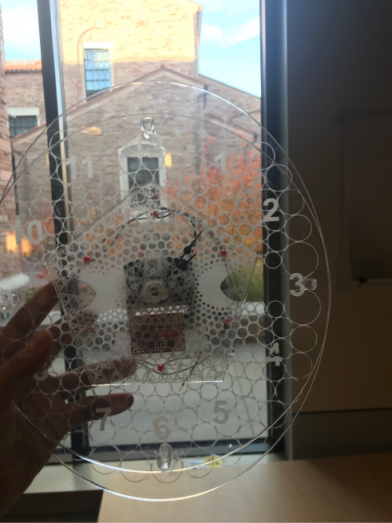

For our project I am thinking of doing a modular lamp. This lamp will have 1 base and 3 (at least) different lamp shades for different desired light enviroments. The idea is to have one shade for indirect light, one shade for direct light, and one fancy shade for impressing other people and giving a good mixture of direct and indirect light. I havent really come up with a solid plan yet with my other teammates for our project and design, but I will make some sketches and my own ideas to put on a mood board, then meet up with my team and we will discuss the specifics of our project. My idea is to use hooks and catches to make it easy to hang and remove the different lamp shades.
Multilayer Acrylic Wall Clock
A cool-looking clock is a bit of an art piece. It can be a novel addition to a room needing something more. It also has the added benefit of telling the time. The idea behind this clock is to have multiple layers of see-through material that would give the sense of depth. The various panels are etched with fractal designs on them. This will draw the eye due to their interesting nature. There are three layers to this clock, each of them shaped differently. The intent behind this was to ensure that the onlooker would see everything at once yet different from various angles. To further enhance the fractal designs, red LEDs will illuminate the layers of the clock face. The light will refract and reflect off of the etchings and between panels, further increasing legibility in low light conditions and visibility of the fractal patterns in general.
For this project, it makes the most sense to laser cut panels of clear acrylic. The diameter is about 10-11 inches and less suitable for a 3-D printer. The overall theme with this clock is somewhat modern but not entirely sci-fi or post-modernist. The font for the clock face numbers is therefore a sans-serif, but somewhat humanized. The LEDs will not require a separate power supply. They will operate directly from the 1.5v battery powering the clock. Support circuitry is provided to properly illuminate the LEDs.

Assignment 3
For assignment 3 I decided to go with a coaster featuring an H in the style that I use when signing my name. This coaster is made out of a fine pressboard which has a finish on it so it should not be vulnerable to liquids. The H is because my initials are HH , so a single H can represent my entire name. I made the coaster large because I have a very large mug and a large coaster will support my mug.
Project 3
Moodboard and sketch for Project 3. I am planning on building a clock. Clocks are a great example of a style, they can be brutalist or art neuvo, they can be constructionist or modern. I think a clock is also the exact thing that I need in my room as I dont have any clocks. My room is a mostly industrial design, so I think I will try to see if I can use the laser cutter to make a very industrial design for my clock using wood.
Sketch for Assignment 3
For assingment three I am planning on making the letter H, for Hudson. It is how I do my signature and it would be cool to have a coaster with my style of H.
Project 1 - Skull Candle
For this project, we wanted to do something a bit challenging and a bit more complex. A candle holder of some variety was in order. We wanted something self-contained but functional and with lots of different surfaces and features. In other words, interesting to look at. We found that a skull of some kind would satisfy these requirements. A skull is not an ordinary object because by default, it caries a persona and a connotation. It is ubiquitous since everyone knows what it is and what they look like. Making it anatomically correct was not too much of a priority. What was more important was the character it portrayed. Small and subtle deviations from what is “correct” alters that character slightly but doesn’t compromise it. Instead, it makes the persona unique and no longer generic.
Since it’s primary function is that of a candle holder, we decided to add in some printed wax drips around the candle. The hole will be on the crown of the skull and be designed to fit a standard tea candle. Of course other candles of that diameter would also fit. A befitting name would be something like, “Skull Candle”. The associated slogan could be, “Bring light to your shadows”.
Reading Response 09/28/2017
These were interesting readings for this week. The article about the 10 rules of good design was interesting because it can easily see that design philosophy reflected in almost everything I use. They are good rules to follow, and I agree with them, but I am not sure whether the idea is to hold all rules equally, or to hold to the rules to varying degrees. Because I can see holding to all the rules to create a kind of boring result. For example, I really like the Art Nuevo period, which is not modernist at all. I also like the art deco period. I think that while they weren’t timeless, they are memorable, arguably more so than timeless things. The chair in the example of timelessness is from the 60’s, but I didn’t no that, It could have been from any time in the last 80 years. But I’m not sure if that makes it good or if that makes it forgettable. On the same note, I would love to be a UX designer, and in UX design, the secret is to be forgettable, but I am not sure that should apply to everything. I like modernism, but pure modernism bores me, it’s like black Helvetica on a white background. It’s just plain, not new, seen before. But I do think that these philosophy ideas can still apply to the current modernist trends of less is more, some sometimes more is needed.
Assignment 2 Final
For Assignment 2, I bounced around with a lot of ideas. The fact that we could do anything, made me want to model everything. After being unable to make up my mind for a week, I thought back to the general idea of Monopoly. At its core, it is a game about capitalism, and a game about making as much money as possible. As I contemplated that fact I realized that monopoly was missing a piece which truly symbolized the core concept of the game. So, I decided on making a stack of money, being shuffled so as to add some interesting curves and make the piece more fun to use and hold. Check it out below!
My initial shape, and the legs.
Sketching out the money curves.
My final rendered product.
Demo 3
For this demo, I modeled a fighter jet. This was a fun excercise, and the free-form modeling tool will be very useful.
Why Design Matters
This was an interesting talk. Alain de Botton has a lot of interesting points when it comes to design. I was very interested in the section when Alain speaks about how design is not only about what people like, but about what people are afraid of. I find this interesting because his second example of the wealthy Belgian family shows that designing for someone’s fear, can also be the best way to design a beautiful object. I think the overlap of psychology and design is an interesting one, and I enjoyed the way that Alain explored that overlap. In a similar vein, when Alain speaks about how classical architecture he makes the point that the goal of classical architecture is to make people more like the ancient Greeks and Romans. I had never thought about it this way before, and it has changed the way that I think about how design is not just about the feelings evoked, but is about the suggestions that design gives off. Another idea that Alain speaks about is how design is a reflection of our perfect selves, that well designed objects are attractive to people because they evoke a feeling of perfection which people desire to attain. In his words, we want to be the best designed objects in our lives.
Assignment 2
For my assignment 2 I am thinking of modeling some sort of skull. I think a viking skull would be a fun monopoly piece, while also being a fun project to model.
Assignment 1
For this assignment, I made a Desktop Cup Holder. It works by increasing the width of the base of a can and adding weight so that accidental bumps will not result in a spilled beverage. The cup holder is only 3" high which is a benefit in this case as it allows for cups designed for car cup holders to also work with this version. The cup holder also has a groove on the bottom matching the standard US aluminum can size for optimal stability. The stylish walls of the holder also allow for an easier grip.
My early project sketches.
How I designed the pattern along the side.
This grove is sized for standard US 12oz cans.
My final result, a desktop cup holder.
Demo 2 - The Tea Pot
Our second demo expanded on the first by showing the level of work that goes into increasingly complex designs. This one was also really neat even though it was difficult, the rail sweep tool was really impressive.
Demo 1 - The Lampshade
For this demo, we modeled a Lampshade in Fusion360. This was a neat into project and the result showed me the possibilities of 3D modeling